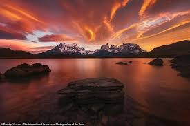
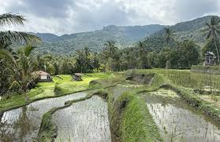
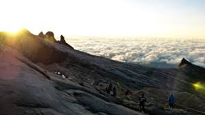
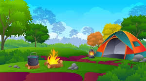

Destinasi Alam Terbaik

Indonesia memiliki banyak destinasi alam yang menakjubkan, mulai dari pegunungan tinggi, pantai berpasir putih, hingga hutan tropis yang lebat. Setiap tempat menawarkan pengalaman yang unik dan pemandangan yang luar biasa.
Beberapa destinasi terkenal yang bisa dijelajahi antara lain Taman Nasional Bromo Tengger Semeru, Gunung Rinjani di Lombok, serta keindahan tersembunyi di Raja Ampat. Untuk penggemar petualangan, pendakian ke puncak gunung berapi atau menjelajahi hutan lebat bisa menjadi pilihan menarik.
Medan Petualangan

Setiap medan petualangan memiliki tantangannya sendiri, baik itu jalur pendakian yang curam, arus sungai yang deras, atau hutan dengan jalur yang belum terjelajahi. Persiapan yang matang dan pengetahuan tentang medan sangat penting untuk keselamatan selama perjalanan.
Pastikan untuk mengetahui medan yang akan dijelajahi, serta mempersiapkan peralatan yang sesuai seperti sepatu gunung, peralatan mendaki, atau pakaian tahan air. Perencanaan yang baik akan membantu menjaga keselamatan dan kenyamanan selama petualangan.
Tips & Panduan
Petualangan di alam membutuhkan persiapan yang baik. Berikut beberapa tips yang bisa membantu menjadikan petualangan Anda aman dan menyenangkan:
Persiapan Mendaki Gunung

Pastikan Anda membawa peralatan yang memadai seperti peta, kompas, makanan ringan, dan air yang cukup. Kenali cuaca dan medan sebelum memulai pendakian, dan jangan lupa untuk berlatih fisik agar tubuh siap menghadapi tantangan.
Berkemah di Hutan

Pilih lokasi perkemahan yang aman, jauh dari tepi sungai atau lereng yang rawan longsor. Gunakan tenda yang tahan cuaca dan pastikan untuk membawa perlengkapan keamanan seperti pisau, lampu senter, dan alat pemadam api darurat.